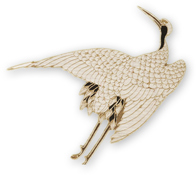

故宫博物院
故宫博物院

成立于1925年的故宫博物院，建立在明清两朝皇宫——紫禁城的基础上。
历经五百年兴衰荣辱，帝王宫殿的大门终于向公众敞开。
走进故宫博物院，您沿中轴线前行，从起伏跌宕的建筑乐章中可以感受盛世皇朝的博大胸怀；可以透过东西六宫精巧的陈设和内廷园囿雅致的格局，捕捉宫廷生活的温婉气息； 可以从养心殿东暖阁卷起的黄纱帘中，追溯百年前中华民族内忧外患的历史沧桑……
 故宫博物院
故宫博物院
走过近百个春秋的故宫博物院，不仅一如既往保管着明清时代遗留下来的皇家宫殿和旧藏珍宝，而且通过国家调拨、向社会征集等方式，极大地丰富了文物藏品，形成古书画、古器物、书籍档案等领域蔚成系列、总数186万余件的珍贵馆藏。漫步在故宫博物院的常设文物专馆，或者欣赏推出的专题文物展览让您可以更完整地了解中华民族工艺美术的伟大成就。
步入新世纪以来，
故宫博物院开展了历史上规模最大的古建维修工程，在让古老的紫禁城焕发新生的同时，也向您生动地展示着弥足珍贵的传统建筑工艺。
当前，故宫博物院的研究人员正在对古建筑、院藏文物、宫廷历史文化遗存、明清档案、清宫典籍和近百年的故宫博物院历程进行着更为深入细致的研究。建立起完整的“故宫学”体系，意在向您揭示紫禁城中蕴涵的博大精深的中华民族智慧和文化精神。
曾经，受经济条件和技术手段的限制，故宫博物院和昔日殿宇重重的帝王宫殿一样，似乎总是蒙着神秘的面纱。但是，近10年来，步入信息化时代的故宫博物院，利用最先进的数字化技术和设备，在虚拟的时空中建立起一座和紫禁城同样辉煌的“数字故宫”。将紫禁城里取之不尽的文化资源奉献给远方的观众朋友，已经不再是遥远的梦想……
故宫APP
V故宫
身历其境的感受故宫的壮观,
去沉浸在故宫吧!
故宫社交平台
我们希望通过开启故宫博物院网站这个与您互动的窗口， 构建一个促进“故宫学”的发展的平台， 欢迎您关注、监督并共同推进故宫博物院的发展……
导览地图
故宫为您量身推荐适合的游览路线
在线预订票
来感受历史文化吧！
故宫博物院正以越来越开放的姿态
邀请您走进这片曾经神秘的领地，走进中华传统文化的圣殿